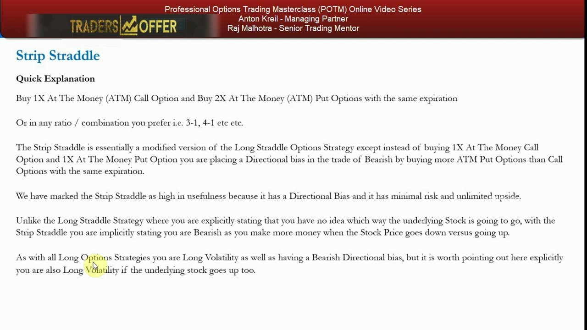
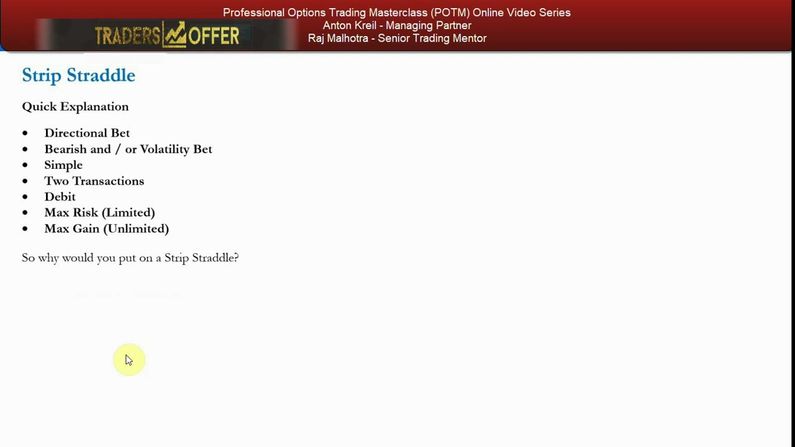
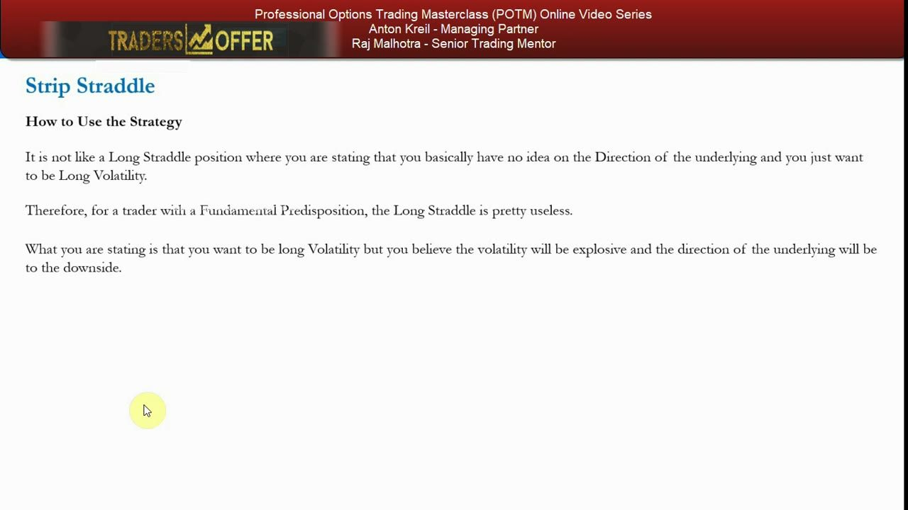
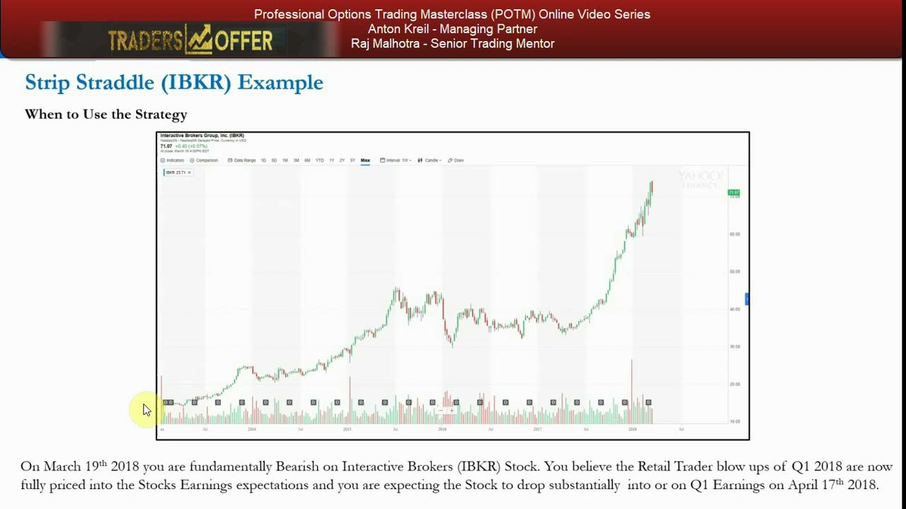
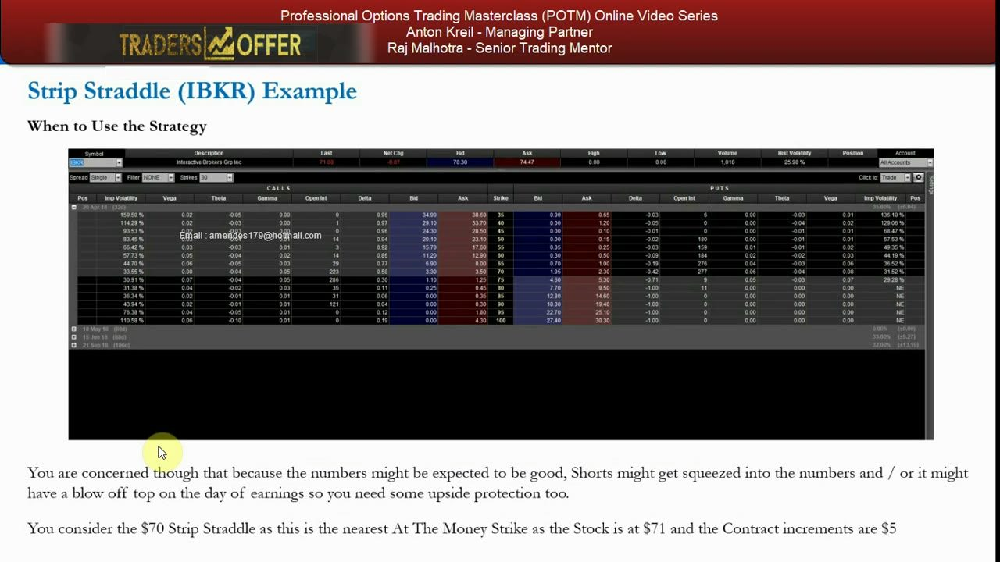
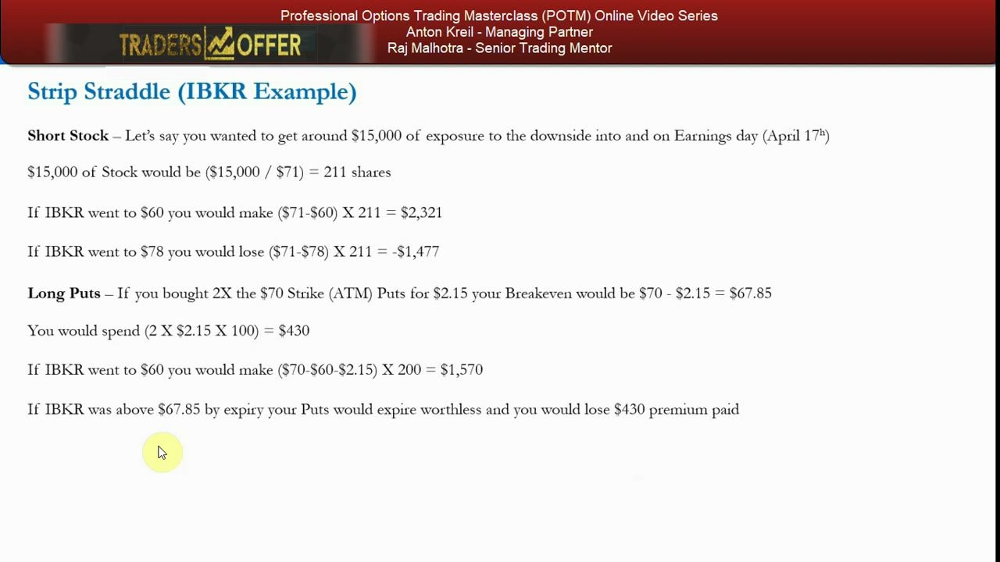
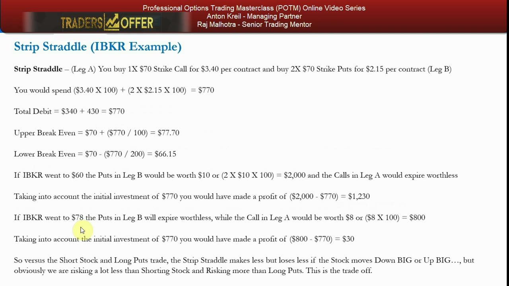
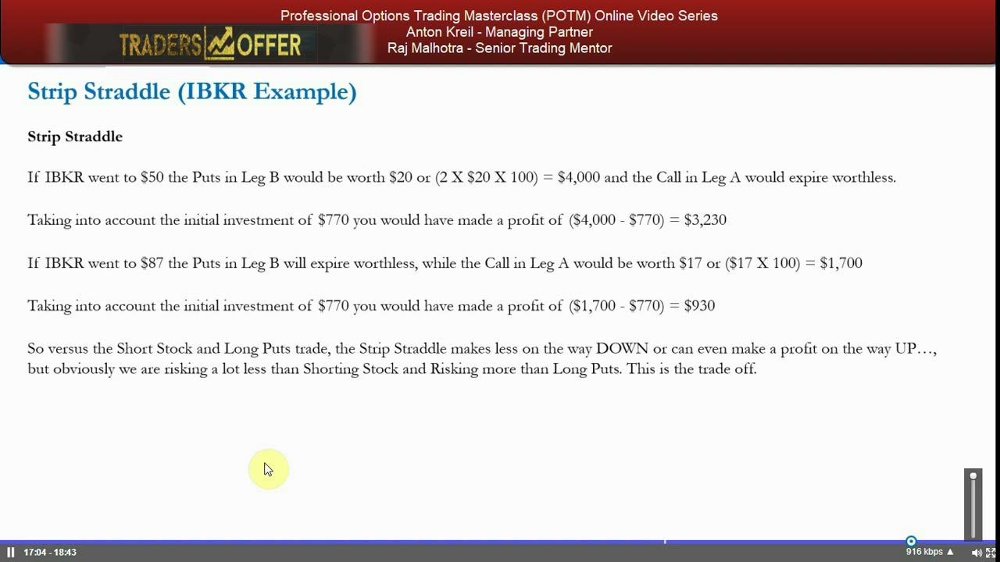
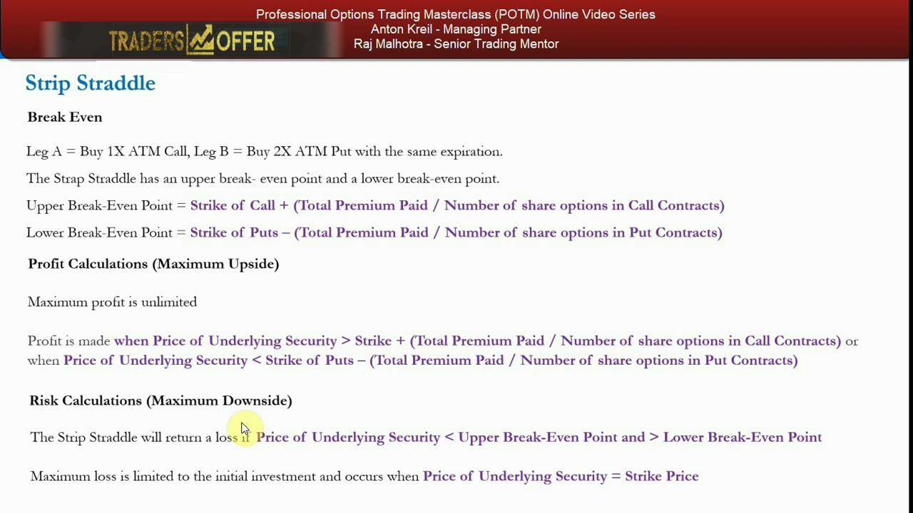
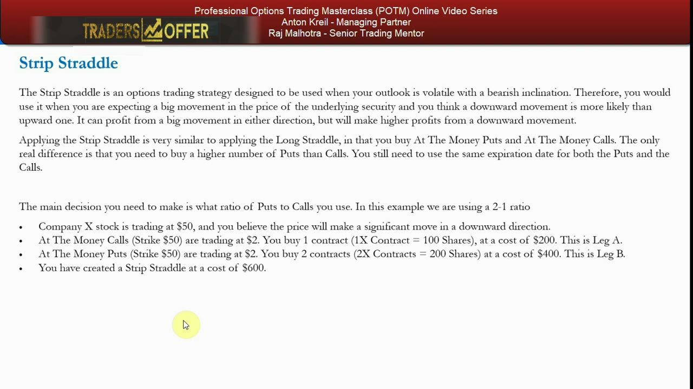

Strip Straddle — The Bearish Volatility Bet
Buy 1 ATM call and 2 ATM puts at the same strike and expiry to bet on an explosive down-move while keeping upside protection.
The strip straddle is the bearish mirror of the strap straddle: a put-heavy long-volatility position that makes more on a fall than on a rally. You buy twice as many at-the-money puts as calls, so the single call acts as a one-to-two hedge on your long puts if you're wrong.
The gist
- STRIP STRADDLE = BUY 1X ATM call + BUY 2X ATM puts, same strike and same expiration (2:1 put-heavy; any put-heavy ratio like 3-1, 4-1 also works).
- It is a bearish-skewed long-volatility bet: you make more on a down-move (2 puts) than an up-move (1 call), but you're long volatility either way.
- Net DEBIT transaction (expensive); max loss is limited to the total premium paid and occurs at the strike; max gain is unlimited via the call, with large downside profit as the stock falls toward $0.
- The single call is a 'one-to-two hedge' — upside protection on the long puts in case you're dead wrong by expiry.
- Breakevens: Upper = Strike + (Total Premium Paid / call-contract shares); Lower = Strike − (Total Premium Paid / put-contract shares). The lower breakeven is closer because it's divided across 2 puts.
- Anton rates the strip straddle HIGH in usefulness for the retail mandate — directional bias to the downside, minimal risk, unlimited upside — with no walk-back.
- IBKR worked example (19 Mar 2018, spot $71.07, Hist Vol 25.98%, $70 strike, 20 Apr 18 expiry): 1× $70 call @ $3.40 = $340 + 2× $70 puts @ $2.15 = $430 → net debit $770; Upper BE $77.70, Lower BE $66.15.
- Outcomes at expiry from the $770 debit: $60 → +$1,230; $78 → +$30; $50 → +$3,230; $87 → +$930 — makes less than short stock or long puts on a big move, but risks far less than shorting and only a little more than plain long puts.
What the strip straddle is
- Buy 1X At The Money (ATM) call + buy 2X ATM puts with the same expiration.
- Any put-heavy ratio you prefer works — 3-1, 4-1, or higher.
- It's a modified long straddle: instead of 1 call and 1 put, you add extra puts to place a bearish directional bias.
- You're implicitly bearish — you make more money when the stock falls than when it rises.
Where the plain long straddle says 'I have no idea which way this goes,' the strip straddle says 'I lean down.' Buying more puts than calls tilts the payoff toward a fall while keeping the volatility exposure of a straddle.

Long volatility, bearish tilt
- Directional bet — bearish, with a volatility bet implicit in the transaction.
- Simple: just two transactions (buy calls, buy twice as many puts).
- Debit transaction — and a large one.
- Max risk is limited to the premium paid; max gain is unlimited via the call.
- As with all long-option strategies, you're long volatility even if the stock goes UP.
The structure is deliberately expensive: you're paying full premium for uncapped downside dollars plus insurance on the upside. Anton marks it HIGH in usefulness because it carries a directional bias, minimal (capped) risk, and an unlimited upside profile.

How to use it — explosive down-move view
- Not like a long straddle, where you claim no view on direction and just want to be long volatility.
- For a trader with a fundamental predisposition, the long straddle is pretty useless.
- Here you state that you want to be long volatility AND you believe the volatility will be explosive to the DOWNSIDE.
- The extra put is the conviction; the single call is a one-to-two hedge if you're wrong.
You put this on when you expect a dramatic collapse into a catalyst but accept that fundamentals or a squeeze could still push the stock up. You don't cheapen the trade by writing strikes — you pay for full downside dollars and buy upside insurance.

The IBKR setup — bearish into earnings
- Interactive Brokers (IBKR) at $71.07 on March 19, 2018.
- Stock rallied from ~$40 in July 2017 to over $70, peaking around $72-$73.
- Fundamentally bearish: you believe the Q1 2018 retail-trader blow-ups are now fully priced into earnings expectations.
- You expect a substantial drop into or on Q1 earnings on April 17, 2018 — about four weeks out.
This is the real trade behind the theory: a stock that has run hard, a specific bearish catalyst (earnings), and a view that the good news is already in the price. The strip straddle expresses the down-lean while covering the risk of a squeeze.

Choosing the strike and expiry
- Option chain top row: Last 71.07, Hist Volatility 25.98%.
- You consider the $70 strike — the nearest at-the-money, since the stock is at $71 and contract increments are $5.
- Expiry chosen as 20 April 2018 to capture the April 17 earnings date.
- You add upside protection because good numbers could squeeze shorts or produce a blow-off top on earnings day.
The strike sits just below spot (nearest ATM), and the expiry is picked to straddle the earnings event. The concern that shorts could get squeezed is exactly why you want the call leg as insurance.

Versus short stock and long puts
- Short stock: ~$15,000 exposure = $15,000 / $71 = 211 shares. At $60 → +$2,321; at $78 → −$1,477.
- Long puts: 2× $70 puts @ $2.15 = $430 spent; breakeven $67.85. At $60 → +$1,570; above $67.85 → puts expire worthless, lose $430.
- Short stock makes the most on a fall but carries unlimited upside risk if you're wrong.
- Long puts cap your loss at $430 but give up upside protection entirely.
These are the two alternatives the strip straddle sits between. Shorting stock is cheap on capital but dangerous to the upside; plain long puts are safe but offer nothing if the stock rips higher. The strip straddle trades a bit more premium for insurance.

The strip straddle — debit and breakevens
- Leg A: buy 1X $70 call @ $3.40 = $340. Leg B: buy 2X $70 puts @ $2.15 = $430. Total debit = $770.
- Upper Break Even = $70 + ($770 / 100) = $77.70.
- Lower Break Even = $70 − ($770 / 200) = $66.15 — closer to strike because the debit is spread over 2 puts.
- At $60: puts worth (2 × $10 × 100) = $2,000, call worthless → profit ($2,000 − $770) = $1,230.
- At $78: puts worthless, call worth ($8 × 100) = $800 → profit ($800 − $770) = $30.
The $770 debit is the entire risk and it's lost only if the stock finishes exactly at $70. Notice the payoff asymmetry: the same-distance down-move ($60) makes $1,230 while the up-move ($78) barely clears at $30 — the bearish tilt in action.

Big-move outcomes
- At $50: puts worth (2 × $20 × 100) = $4,000, call worthless → profit ($4,000 − $770) = $3,230.
- At $87: puts worthless, call worth ($17 × 100) = $1,700 → profit ($1,700 − $770) = $930.
- Versus short stock / long puts, the strip straddle makes less on the way DOWN but can still profit on the way UP.
- It risks a lot less than shorting stock, and only a little more than plain long puts — that's the trade-off.
On truly explosive moves the structure pays either way: a big drop delivers most of the profit ($3,230 at $50), while a violent rally still nets $930 at $87. The cost of that two-sided payoff is that between the breakevens ($66.15–$77.70) you lose money.

The formal formulas and breakevens
- Upper Break-Even = Strike of Call + (Total Premium Paid / share options in call contracts).
- Lower Break-Even = Strike of Puts − (Total Premium Paid / share options in put contracts).
- Maximum profit is unlimited; profit is made above the upper BE or below the lower BE.
- Maximum loss is limited to the initial investment and occurs when price = strike.
- The strip straddle uses exactly the same formulas as the strap straddle (just put-heavy instead of call-heavy).
Both breakevens use the TOTAL net debit, but each divides by that leg's total shares — so the put-heavy side sits closer to the strike. Loss is worst at the strike and shrinks in either direction as one leg gains intrinsic value.

Generic 2:1 example — Company X
- Use it when your outlook is volatile with a bearish inclination — a big move expected, downside more likely than upside.
- Same as a long straddle except you buy MORE puts than calls, same expiration for both.
- Company X at $50, expecting a significant downward move; ratio 2-1.
- Leg A: ATM $50 call @ $2 → 1 contract = $200. Leg B: ATM $50 put @ $2 → 2 contracts = $400.
- Total strip straddle cost = $600.
The clean textbook case: identical $2 premiums, a single call and two puts at the $50 strike for a $600 debit. It profits from a big move in either direction but earns higher profits on a fall — the defining bearish skew of the strip straddle.

Glossary
- Strip StraddleA put-heavy long-volatility strategy: buy 1 ATM call and 2 (or more) ATM puts at the same strike and expiry, giving a bearish directional bias while staying long volatility either way.
- Strap StraddleThe bullish mirror (chapter 24): buy 2 ATM calls and 1 ATM put. The strip straddle uses the identical breakeven, profit and risk formulas, just tilted to the downside.
- One-to-two hedgeThe single call in a 2:1 strip straddle acts as upside protection ('a hedge') against the two long puts in case the stock rallies instead of falling.
- ATM (At The Money)An option whose strike is nearest the current stock price. Here the $70 strike is chosen because the stock is at $71 and increments are $5.
- Net DebitThe total premium paid to open the position ($770 in the IBKR example) — also the maximum possible loss, realized only if the stock finishes exactly at the strike.
- Upper / Lower BreakevenPrices where the position turns profitable: Upper = Strike + (Total Debit / call shares); Lower = Strike − (Total Debit / put shares). The lower one is closer because the debit is divided across more puts.
- Blow-off topA sharp, often final upward spike (e.g. on a positive earnings surprise or short squeeze) — the upside risk the call leg is bought to protect against.
- Historical VolatilityThe realized volatility of the underlying's past returns, shown as 25.98% on IBKR's chain — a reference for how large a move the market has recently produced.